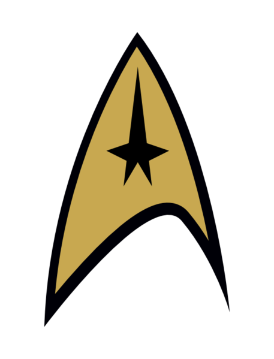

|  |
Howden - Smith Star Trek Movie |
| Ideas: | Reason: |
|
Space: the final frontier. These are the voyages of the starship Enterprise. Its five-hour mission: to explore strange new worlds, to seek out new life and new civilizations, to boldly go where no chappie's gone before. |
Parody of the intro thingy. |
| Lego Enterprise (Built by William probably) | |
|
One of the characters is an alien species (called Gromulans) which is exactly the same as a human, except for that their left kidney is where their right kidney should be, and their right kidney is where their left kidney should be. |
Most of the aliens in star trek are almost exactly the same as humans. |
| We all wear pyjamas. | Running joke about starfleet uniforms. |
| Character wearing a red pyjama top nearly gets killed and is advised to change their shirt colour. | Redshirts. |
| Character is German and likes sausages, but has a really silly posh british accent (probably played by me) | Picard is supposed to be French and eats crissoints but has a British accent (i.e. doesn't have an accent at all) |
| set in the year 2317 | (Stardate 40123.3) |
| Enterprise-Z | "Plenty more letters in the alphabet" quote from one of the movies |
| Printed Badges | I'll get these ready. |
| We all keep straight faces. | It'll make things even funnier lol |
| Name: | Position: | Rank: | Unique Feature: | Played by: |
| Stewart Wilson (reference to Patrick Stewart and William Shatner) | Captain | Captain | Is the captain. | William Howden |
| Scouse (Reference to Geordi/Jordi) | First Officer | Commander | Wears red pyjama top. | Grace Howden |
| Number two | Helmsman | Liutenant commander | Called number two. | Iona Smith |
| Jan Gustaffson | Chief Engineer | Liutenant | German guy. | Tim Smith |
| Dotty | Ship's doctor | Liutenant | Called dotty | Saffron Smith |
| Oss | Alien | n/a | Gromulan | Katie Howden |